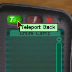

|
Once in another player's camp, you must return to the teleport perimeter (the perimeter of the camp, between the teleport force field and the perimeter marker poles). If you have Rovers, these must also be in the teleport perimeter for you to teleport them back. Note that Rovers can be sent home by issuing the "Retreat" command to them. Once in the perimeter, hit the green "T" button on the left upper corner of your UI. |
 |